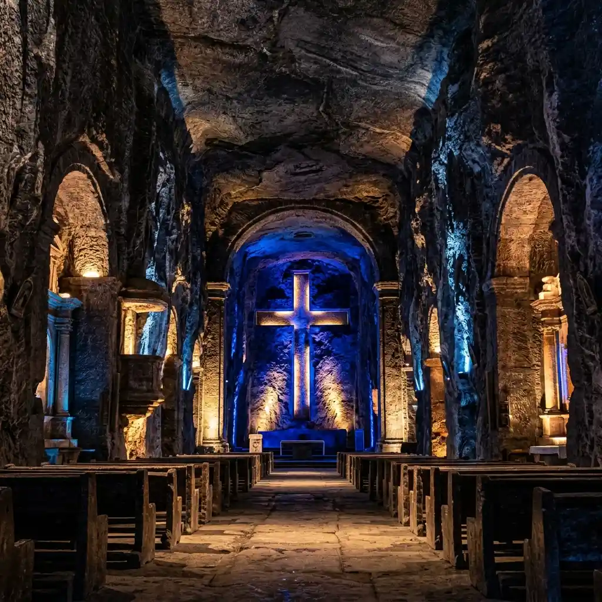
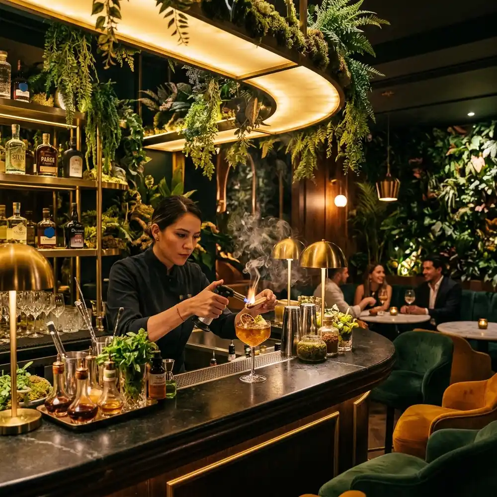

Tour a la Catedral de Sal de Zipaquirá
Excursión diaria compartida desde Bogotá. Explora la primera maravilla de Colombia con transporte ida y regreso desde tu hotel, ingresos, almuerzo tradicional y seguro médico incluido.
Reservar o Cotizar Tour
Completa tus datos para asegurar tus cupos. Te contactaremos en minutos para coordinar la recogida.
Recogida en tu Hotel
Te recogemos directamente en tu hotel o alojamiento en Bogotá.
Soporte en Ruta 24/7
Asistencia y monitoreo logístico en tiempo real durante todo el recorrido.
Garantía de Viaje Seguro
Operador turístico legal con Registro Nacional de Turismo (RNT N° 44180).
Almuerzo y Menú Flexible
Plato regional tradicional de la sabana con opciones vegetarianas confirmadas.
¿Por qué hacer el Tour a la Catedral de Sal de Zipaquirá desde Bogotá?
Ficha técnica, logística de transporte y especificaciones del recorrido subterráneo.
El Tour a la Catedral de Sal de Zipaquirá desde Bogotá es un circuito turístico de 1 día (8 horas) operado por Transfers & Tours (RNT N° 44180) . Incluye recogida en hotel a las 7:30 AM, salida a las 8:00 AM, traslados en transporte especial a 49 km de Bogotá, boletos de acceso sin filas a 180m bajo tierra en la mina de sal, audio guía multilingüe, almuerzo sabanero y seguro médico.
El tour a la Catedral de Sal de Zipaquirá desde Bogotá es la excursión terrestre más reservada de la Sabana de Cundinamarca [Fuente: ANATO ]. Este circuito recorre 49 kilómetros al norte de Bogotá hasta el Parque de la Sal a 2.650 msnm, permitiendo descendientes ingresar a un santuario religioso y arquitectónico esculpido a 180 metros bajo tierra dentro de una mina activa de sal [Fuente: Catedral de Sal de Zipaquirá ].
El recorrido interior abarca aproximadamente 1.5 kilómetros de caminata por socavones iluminados con luces LED de alta tecnología, a una temperatura interna constante de 14°C a 16°C. Durante la visita autónoma con audio guía multilingüe se aprecian las 14 estaciones del Viacrucis de Sal, la majestuosa Cruz Subterránea de 16 metros de altura, el Domo Central y el Espejo de Agua iluminado.
Nuestro servicio en vehículos climatizados de placa blanca (Servicio Especial de Turismo) coordinado por Transfers & Tours (RNT N° 44180) garantiza salida puntual a las 8:00 AM para evitar el tráfico de la Autopista Norte, logrando un tiempo estimado de trayecto de 1 hora y 30 minutos [Fuente: Logística de Operaciones ]. Toda la jornada incluye seguro médico local contra imprevistos personales.
| Especificación | Detalle Oficial | Fuente de Regulación |
|---|---|---|
| Duración total | 1 Día (Aprox. 8 horas) | Operador Logístico |
| Tipo de transporte | Vehículos climatizados de placa blanca (Placa Pública de Turismo) | Ministerio de Transporte de Colombia |
| Profundidad del atractivo | 180 metros bajo tierra (mina activa de sal) | Sociedad de Economía Mixta Catedral de Sal |
| Seguro y asistencia | Póliza contractual y extracontractual de asistencia médica | Superintendencia de Financiera de Colombia |
| Registro del operador | Operador legal registrado bajo RNT N° 44180 | Ministerio de Comercio, Industria y Turismo |

Itinerario Paso a Paso: ¿Cómo se Desarrolla el Tour?
Cronograma optimizado para disfrutar de la experiencia subterránea sin prisas.
Recogida y Salida a las 8:00 AM
Comenzamos la jornada con el pick-up directo en tu hotel o alojamiento en Bogotá. El traslado se realiza en transporte compartido climatizado, recorriendo la Sabana de Bogotá de forma cómoda y directa hacia Zipaquirá.

Llegada e Ingreso a la Catedral de Sal
Llegamos al Parque de la Sal en Zipaquirá. Ingresamos directamente sin filas de taquilla. Recorrerás los 180 metros bajo tierra de la mina activa de sal, descubriendo las 14 estaciones del Viacrucis, el Domo de la Catedral y el espejo de agua.
Almuerzo Sabanero Tradicional
Tras la visita subterránea, disfrutaremos de un almuerzo típico de la sabana en un restaurante tradicional. El menú incluye opciones tradicionales (como el ajiaco santafereño o carnes a la brasa) y alternativas vegetarianas adaptables a dietas especiales.

Retorno Seguro a Bogotá
Regreso cómodo a la capital en nuestro transporte compartido. Te dejaremos directamente en el punto de recogida inicial o en un sector central convenido, finalizando aproximadamente a las 4:00 PM con cobertura médica total activa.
¿Qué Incluye y qué No Incluye el Tour a la Catedral de Sal?
Todo lo necesario para comercializar y disfrutar del circuito de manera formal.
Servicios Incluidos
No Incluye
Calculadora de Tarifas: ¿Cuánto Cuesta el Tour?
Selecciona el número de personas para calcular el precio final de tu reserva.
Calculadora de Tarifas
Cotización Estimada
Entrada + Almuerzo + Transporte
Cancelación gratuita hasta 24 horas antes
Opiniones de Nuestros Viajeros
Comentarios reales de personas que han vivido la experiencia de la Catedral de Sal con nosotros.
"La puntualidad en la recogida a las 8:00 AM fue excelente. El almuerzo típico sabanero estuvo riquísimo, y agradecemos mucho que nos dieran la opción vegetariana para mi hijo sin costo adicional."

"Excelente excursión familiar. Todo estuvo coordinado a tiempo: el transporte nos recogió a las 8:00 AM en el hotel, la entrada fue súper rápida y el audio guía en mi idioma explicó con mucho detalle todo el recorrido."

"La Catedral de Sal es impresionante y el almuerzo sabanero estuvo delicioso, con una opción vegetariana excelente para mi esposa. El seguro de asistencia nos dio mucha tranquilidad."

Preguntas Frecuentes sobre la Visita a la Mina de Sal
Resolvemos las preguntas operativas clave para tus clientes.
¿A qué hora se realiza la recogida y qué pasa si no estoy listo?
La recogida inicia a partir de las 7:30 AM para salir de Bogotá a las 8:00 AM estrictamente [Fuente: Operaciones Transfers & Tours ]. Se da un tiempo de espera de 10 minutos en el lobby del hotel para no retrasar el cronograma del grupo compartido.
¿Cómo se solicita la opción vegetariana para el almuerzo?
Puedes indicarlo directamente en el formulario de reserva o a nuestro asesor de soporte al confirmar el servicio. Contamos con menús alternativos con proteínas vegetales locales [Fuente: Cocina Tradicional Sabanera ].
¿Es adecuado el recorrido para personas mayores o con movilidad reducida?
El interior de la Catedral de Sal cuenta con rampas transitables y piso firme de sal compacta a 180 metros bajo tierra. Sin embargo, no se dispone de ascensores y el tramo peatonal total es de aproximadamente 1.5 kilómetros [Fuente: Catedral de Sal de Zipaquirá ].
¿El seguro de asistencia médica cubre incidentes dentro de la mina?
Sí, el seguro médico local provisto cuenta con cobertura total por accidentes personales y contingencias dentro del Parque de la Sal y durante todos los trayectos del vehículo de turismo [Fuente: Póliza de Asistencia Médica ].